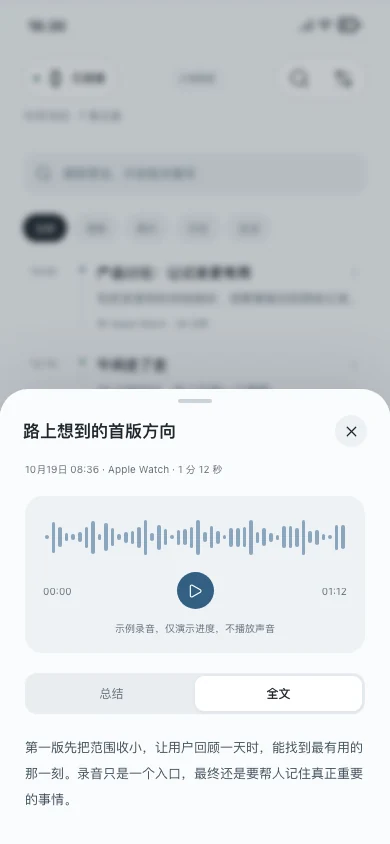
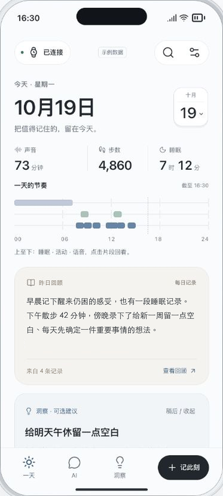
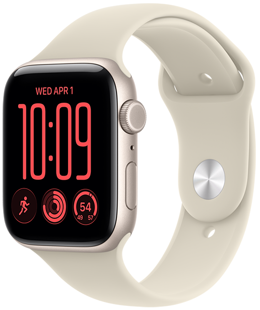
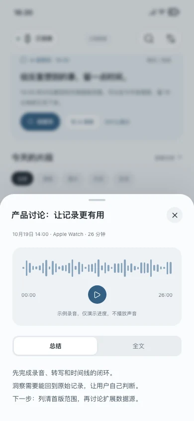
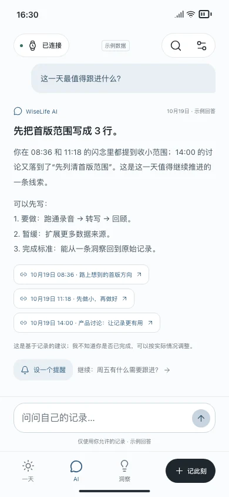
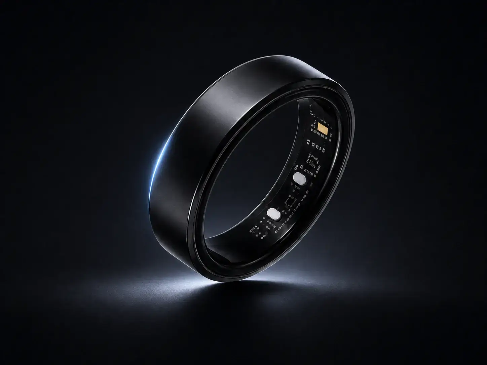

随手录下先留下，
先留下，
不用现在就整理。
轻点开始录音，继续手头的事；长按说一句，随手留下闪念。回到手机，再慢慢整理。
你的随身生活记录
随时说一句，留住眼前的想法。
让 AI 每日回顾，并在有帮助时提出建议。
WiseLife App 不提供云端服务；日常记录保存在手机。


生活里的小片刻
减少记录负担，让 AI 从每天的数据里，帮你看见值得关注的事。

轻点开始录音，继续手头的事；长按说一句，随手留下闪念。回到手机，再慢慢整理。

先看总结，需要细节时切回全文。每次回顾，都能找到原来的那句话。

选一天，问一个问题。沿着回答中的来源回看，再为想做的事设个提醒。
画面来自 WiseLife 交互原型，使用示例记录。
看看它怎么用
回看、读全文、问 AI、找到来源。
这是早期操作演示，最新界面请体验下方原型。
早期原型实录，无声视频，可打开字幕。
视频暂时无法播放，请直接体验下方原型。
把值得记住的，留在今天。
每一段，都是生活留下的线索。
懂你的记录，也听你说。
回顾一段对话，串起几个想法，
或给接下来的一天留一点提醒。
交互演示 · 回答来自预设示例，未连接真实 AI。
有可靠线索和可选建议时才出现。
生活洞察连接多条有依据的记录；闪念资产则提炼一段话里值得留下的内容。
10月19日 · 10 条记录
选择模型、数据来源和 AI 提醒的节奏。
暂停来源后，已有记录仍保留。这里的开关只演示连接状态；录音始终由你主动开始。
Apple Watch 与 EurekaRing，选择你习惯的记录方式。
已有兼容设备，就无需再买一台专用录音设备。
轻点开始长录音，长按留住一闪而过的念头。录音传回 iPhone，继续转写、回顾与总结。
支持 Series 4–12 · SE 全系列 · Ultra 全系列
watchOS 10+，搭配 iOS 26+。Series 12 / Ultra 4 需 iOS 27+。
系统兼容范围 · 查看 Apple 说明 ↗
把交互戴在指间。用声音表达，用触控发起，用触觉接收回应，让灵感有一个更轻盈的入口。
已接入 WiseLife。录音汇入 iPhone，与其他记录一起回顾。
WiseLife App 不提供云端服务。你在 App 中创建的所有记录、转写、照片、总结和洞察默认保存在 iPhone 本机；Apple Watch 录音会传回配对 iPhone 后保存。
所有记录、转写、照片、总结和洞察默认保存在 iPhone 本机。Apple Watch 录音传回配对手机后保存；WiseLife 不提供云账户、云存储或云同步。
留在你的 iPhone用系统语音模型或 Whisper 转写，以可用的端上模型生成总结。下载模型后，本地处理无需 API Key。
取决于设备、系统与语言支持也可使用自己的模型地址和 Key，连接兼容 OpenAI 或 Anthropic 的 AI 服务。由你决定是否发送相关文字。
可选接入 · 服务费用由提供方收取录音由你主动开始，AI 的数据范围由你选择。你可选择是否连接第三方 AI；发送文字前会先展示内容并征求确认。
你的记录，为你所用使用已下载且受支持的本地模型，记录与 AI 处理都在设备上完成。
WiseLife 不提供云端服务。只有你主动选择外部 AI 并确认发送时，选中的文字才会直接发送给该服务商；原始录音、照片和笔记仍保存在本机。
开始之前
设备、模型和数据，说明白再开始。
WiseLife 已支持 Apple Watch 和 EurekaRing。已有兼容硬件与 iPhone，就无需另购专用录音设备；硬件本身不包含在 App 售价中。
查看支持的设备WiseLife App 不提供云端服务；所有记录、转写、照片、总结和洞察默认保存在 iPhone 本机。支持的语音模型下载后可以离线转写；本地总结取决于设备、系统、语言及模型支持。你可以自行连接第三方 AI；只有确认后，选中的文字才会发送给该服务商。
WiseLife App 不提供云端服务，也不会把你的记录上传到 WiseLife 服务器。Apple Watch 录音会传回配对 iPhone 后保存在手机。只有你主动选择外部 AI 并确认时，选中的文字才会直接发送给你配置的服务商；录音与照片不会发送给外部 AI。
可以从回答的来源链接回到记录。当前按所选日期检索你允许的内容；没有足够记录时，会说明信息不足。
录音由你主动开始和结束。健康与活动是可选的数据来源；WiseLife 不据单次心率或一天的记录判断情绪，也不提供健康诊断。
WiseLife 原价 US$19.99，首发一次性买断价 US$9.99，优惠截至 2026 年 12 月 31 日。之后恢复原价；各地区实际价格以 App Store 为准。本地模型调用不产生云端 AI 请求费用；自选外部 AI 的服务费用由提供方另行收取。
一次购买，长期拥有
US$9.99
首发优惠 · 原价 US$19.99 · 截至 2026 年 12 月 31 日
随手记录，AI 每日回顾，数据留在自己手中。
一次性买断，无订阅；促销结束后恢复原价。各地区实际价格以 App Store 为准。
自选外部 AI 的服务费用由提供方另行收取。